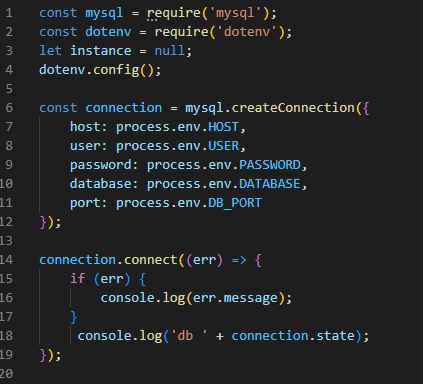
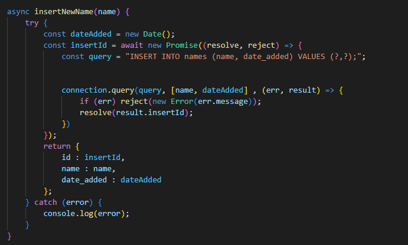
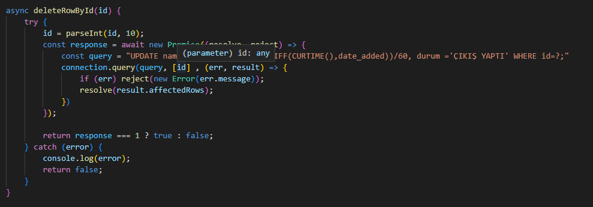
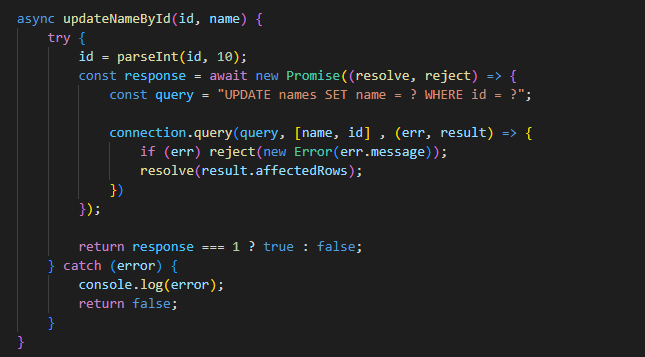
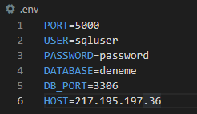

Projemi node.js tabanlı yaptım.Projemin amacı otopark takip sistemi(otomasyon).
Plakayı girip çıkış yaptıktan sonra ücreti otomatik gösteriyor.
Veri tabanıyla çalışıyor
Düzenleme ve arama işlemide yapılabiliyor
Localhost, yerel ağınızdaki bilgisayarınızın IP'si olan 127.0.0.1 ile tanımlanmaktadır. Windows ve Linux işletim sistemlerinde “hosts” adlı bir dosya kullanılarak çalışmaktadır. Windows'ta localhost özelliği yerleşik olarak bulunmaktadır. Kullanmak için tek yapmanız gereken ise aktif hale getirmek olmalıdır.
Node.js sitesine giriyoruz.İşletim sisteminize göre seçip indiriyoruz.
Kurulum tamamlandıktan sonra kurulum sonucu Windows komut istemini (CMD veya PowerShell) çalıştırdıktan sonra node -v veya node --version komutlarından birini yazarak Node.js kurulum sonucunu ve Node.js sürümünü görebilirsiniz.Node.js kurulumunu başarıyla yaptıysanız Windows komut istemi aşağıdaki gibi bir sonuç verecektir.
npm nedir öğrendiğinize göre sırada npm’nin nasıl çalıştığını görmek var. npm’in iki rolü vardır:
Açık kaynaklı Node.js ürünlerinin yayınlaması için yaygın biçimde kullanılan bir depodur. Yani npm herkesin bir şeyler yayınlama yapabileceği ve JavaScript’de yazılmış araçları paylaşabileceği online bir platformdur.
npm, tarayıcılar ve sunucular gibi online platformlarla etkileşime geçmeye yardımcı olan bir komut satırı aracıdır. Bu araç bir proje gerçekleştirmek için gereken paket yüklemek ve kaldırmakta, sürüm ve bağımlılık yönetiminde yardımcı olur.
Kullanmak için birlikte paketlendirildiklerinden dolayı node.js yüklemeniz gerekmektedir.
Otopark otomasyonları örneklerine bakarak basic bir tasarım yapmak istedim.
Basic tarzındaki tasarımlar bana daha hoş geldiği için bu sonuca vardım.
Html ve css ile sayfayı oluşturup tasarımlarını yaptım.
DATABASE BAĞLANTI KOMUTLARI
BU YAZDIĞIM KODLAR DATABASE'DE TÜM VERİLERİ ÇEKİYOR
BURADA DATABASE'DE YENİ KAYIT GİRMEYİ SAĞLIYOR
BURADA ÇIKIŞ BUTONUNU VE OTOMATİK ÜCRET HESAPLANMASI İÇİN YAZDIĞIM KOD
PLAKA GÜNCELLEMESİ İÇİN YAZDIĞIM KOD
App.js'i çalıştırır , uygulamayı local olarak başlatır
VDS kiralayarak uzak masaüstüne SQL serveri kurdum
created with
Website Builder Software .